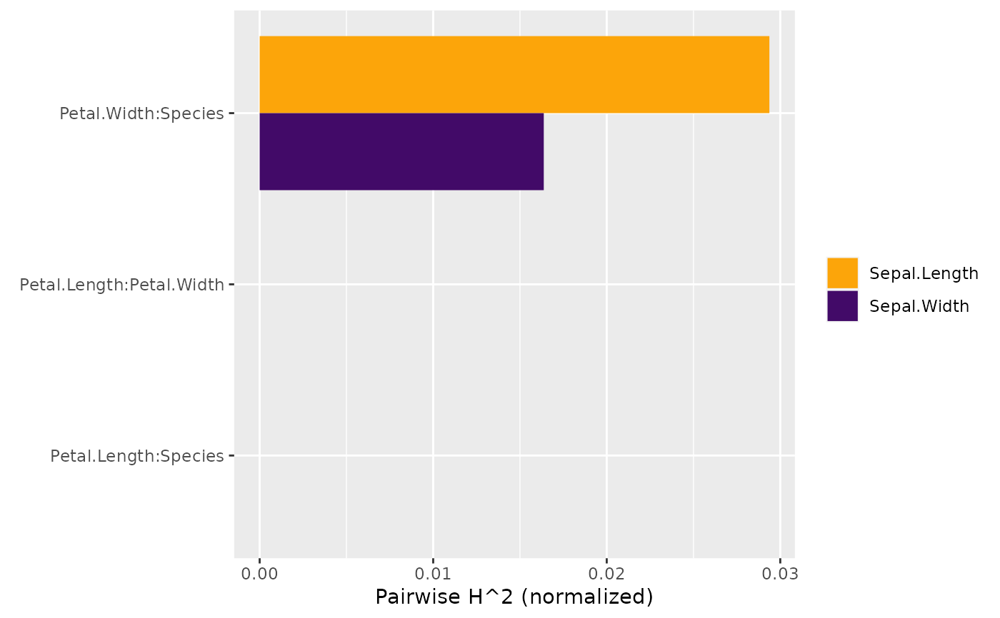

Friedman and Popescu's statistic of pairwise interaction strength, see Details.
Use plot() to get a barplot.
h2_pairwise(object, ...)
# S3 method for default
h2_pairwise(object, ...)
# S3 method for hstats
h2_pairwise(
object,
normalize = TRUE,
squared = TRUE,
sort = TRUE,
zero = TRUE,
...
)Object of class "hstats".
Currently unused.
Should statistics be normalized? Default is TRUE.
Should squared statistics be returned? Default is TRUE.
Should results be sorted? Default is TRUE.
(Multi-output is sorted by row means.)
Should rows with all 0 be shown? Default is TRUE.
An object of class "hstats_matrix" containing these elements:
M: Matrix of statistics (one column per prediction dimension), or NULL.
SE: Matrix with standard errors of M, or NULL.
Multiply with sqrt(m_rep) to get standard deviations instead.
Currently, supported only for perm_importance().
m_rep: The number of repetitions behind standard errors SE, or NULL.
Currently, supported only for perm_importance().
statistic: Name of the function that generated the statistic.
description: Description of the statistic.
Following Friedman and Popescu (2008), if there are no interaction effects between
features \(x_j\) and \(x_k\), their two-dimensional (centered) partial dependence
function \(F_{jk}\) can be written as the sum of the (centered) univariate partial
dependencies \(F_j\) and \(F_k\), i.e.,
$$
F_{jk}(x_j, x_k) = F_j(x_j)+ F_k(x_k).
$$
Correspondingly, Friedman and Popescu's statistic of pairwise
interaction strength is defined as
$$
H_{jk}^2 = \frac{A_{jk}}{\frac{1}{n} \sum_{i = 1}^n\big[\hat F_{jk}(x_{ij}, x_{ik})\big]^2},
$$
where
$$
A_{jk} = \frac{1}{n} \sum_{i = 1}^n\big[\hat F_{jk}(x_{ij}, x_{ik}) -
\hat F_j(x_{ij}) - \hat F_k(x_{ik})\big]^2
$$
(check partial_dep() for all definitions).
Remarks:
Remarks 1 to 5 of h2_overall() also apply here.
\(H^2_{jk} = 0\) means there are no interaction effects between \(x_j\) and \(x_k\). The larger the value, the more of the joint effect of the two features comes from the interaction.
Since the denominator differs between variable pairs, unlike \(H_j\), this test statistic is difficult to compare between variable pairs. If both main effects are very weak, a negligible interaction can get a high \(H^2_{jk}\). Therefore, Friedman and Popescu (2008) suggests to calculate \(H^2_{jk}\) only for important variables (see "Modification" below).
Modification
To be better able to compare pairwise interaction strength across variable pairs,
and to overcome the problem mentioned in the last remark, we suggest as alternative
the unnormalized test statistic on the scale of the predictions,
i.e., \(\sqrt{A_{jk}}\). Set normalize = FALSE and squared = FALSE to obtain
this statistic.
Furthermore, we do pairwise calculations not for the most important features but
rather for those features with strongest overall interactions.
h2_pairwise(default): Default pairwise interaction strength.
h2_pairwise(hstats): Pairwise interaction strength from "hstats" object.
Friedman, Jerome H., and Bogdan E. Popescu. "Predictive Learning via Rule Ensembles." The Annals of Applied Statistics 2, no. 3 (2008): 916-54.
# MODEL 1: Linear regression
fit <- lm(Sepal.Length ~ . + Petal.Width:Species, data = iris)
s <- hstats(fit, X = iris[-1])
#> 1-way calculations...
#>
|
| | 0%
|
|================== | 25%
|
|=================================== | 50%
|
|==================================================== | 75%
|
|======================================================================| 100%
#> 2-way calculations...
#>
|
| | 0%
|
|======================================================================| 100%
# Proportion of joint effect coming from pairwise interaction
# (for features with strongest overall interactions)
h2_pairwise(s)
#> Pairwise H^2 (normalized)
#> [,1]
#> Petal.Width:Species 0.05546172
#> Sepal.Width:Petal.Length 0.00000000
#> Sepal.Width:Petal.Width 0.00000000
#> Sepal.Width:Species 0.00000000
#> Petal.Length:Petal.Width 0.00000000
#> Petal.Length:Species 0.00000000
h2_pairwise(s, zero = FALSE) # Drop 0
#> Pairwise H^2 (normalized)
#> Petal.Width:Species
#> 0.05546172
# Absolute measure as alternative
abs_h <- h2_pairwise(s, normalize = FALSE, squared = FALSE, zero = FALSE)
abs_h
#> Pairwise H (unnormalized)
#> Petal.Width:Species
#> 0.1726312
abs_h$M
#> [,1]
#> Petal.Width:Species 0.1726312
# MODEL 2: Multi-response linear regression
fit <- lm(as.matrix(iris[1:2]) ~ Petal.Length + Petal.Width * Species, data = iris)
s <- hstats(fit, X = iris[3:5], verbose = FALSE)
x <- h2_pairwise(s)
plot(x)

plot(x[, "Sepal.Length"])